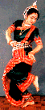

Jpeg image: 9.5KTraditionally the classical dance form of Odissi was performed as mahari or devadasi dance, in front of and dedicated to Lord Jaganath in the temples in the state of Orissa, particular in the temple of Lord Jaganath in Puri and the famous Konark Sun Temple. Having been revived from virtual obscurity, it is possible that Odissi is an even earlier dance form than Bharata Natyam, another better known south Indian temple dance form (on which there will be a feature in a later edition of The Muse), with sculptural forms of Odissi dating to 2nd century B.C.
With social and political change in Indian society and later the suppression of the 'mahari' or 'devadasi' tradition by the British authorities, this classical dance form moved out of the temples and took up a place in the wider Indian society, being performed by individual dancers, travelling and local dance troupes. This process began in the 16th century with young dancers called 'Gotipuas', performing the dance outside on the temples.
Much of Odissi was revived while India fought for her independence through the early years of this century and after Independence in 1949. It was necessary indeed for some of the regeneration of the dance to arise from research on the sculptures of the temples in Orissa because a very significant part of the dance had been lost. It was revived by a number of individuals, who crystallised the repertoire and trained new performers and teachers; people such as Pankaja Charan Das, Kelu Charan Mahapatra, Mohadev Rout, Deba Prasad Das and Hare Krishna Behera. The great teachers of the classical dance forms are known as gurus and are treated with great respect by their pupils, the relationship being more like that one has with a priest.
The classical dance form of Odissi is a dance form made up of its own vocabulary of foot positions, head movements, eye movements, body positions, hand gestures, rhythmic foot work, jumps, turns and spins. The dance form is then in turn made up of traditional dance pieces which have been handed down from teacher to pupil. Some of these pieces have been formulated in the distant past when it was used in temple worship, others arise from the great Indian spiritual writings, such as poetry and epic stories, and finally there are modern pieces which have been the inspired work of the gurus and choreographed by them.
The key noticeable difference between the two forms, Odissi and Bharata Natyam, is that Odissi has more curves, curves of the body which can make it a more sensual dance form, as opposed to the athleticism and angular nature of Bharata Natyam. Poses, as one might find in Indian sculpture, are at the core of Odissi. The most beautiful of these is the 'tribunga' position, with three bends in the body, at the neck, waist and knee. If you go to any collection of Indian art, you will see sculptures of goddesses and dancers in 'tribunga' position dating back many hundreds of years.
The phenomenon that we have now seen with Bharata Natyam where modern dancers and choreographers are charting new territories outside of the traditional forms while using the classical vocabulary, with examples such as Shobana Jeyasingh in the UK and Chandraleka in India. The beginnings of this departure for Odissi include the formation of the Pushpalata Dance Company in the UK and the work of Madhavi Mudgal, who recently performed at The Queen Elizabeth Hall, London, with Guru Kelu Charan Mahapatra.
Copyright © 1995 The International Communique Ltd